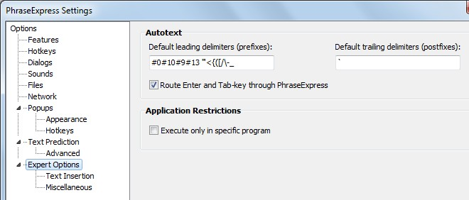

[start, basics, devpex, tasks, generic, future]
XBN-PhraseExpress is a large set of generically-useful Microsoft Windows scripting tools, written in PhraseExpress*, using the plain-text editor TextPad as its foundation. XBNPE is significantly for creating phrases in TextPad, and therefore many phrases are logically only-callable in a TextPad document. There are, however, many useful features for those developing phrases in any environment, including the PhraseExpress application itself.
There is a significant setup necessary in order for XBN-PhraseExpress and TextPad to communicate properly, but it is largely a one-time-only process.
Contents:
[GO] DEMO VIDEO: Composing PhraseExpress code in TextPad using XBN-PhraseExpress[GO] Getting started[GO] The basics[GO] Developing with XBN-PhraseExpress[GO] Specific XBNPE tasks[GO] Generic PhraseExpress documentation (non XBNPE-specific)[GO] Unfinished and future projects(This documentation is optimized for mobile devices.)
*PhraseExpress is by Bartels Media GmbH, TextPad is written by Helios Software Solutions
[top] XBN-PhraseExpress: Getting started[start, basics, devpex, tasks, generic, future]
[GO] GitHub project page (issue tracker, wiki)[GO] User-discussion forum[GO] The most-up-to-date documentation[GO] XBN-PhraseExpress is released under the LPGL 2.1 Full license text[GO] Installation[GO] Downloads (release notes)[GO] Global configuration variables[GO] Default key-commands[GO] Verification[GO] Acknowledgements[GO] How to "execute" a phrase[BACK] XBNPE: Getting started: AcknowledgementsPeople:
http://validator.w3.org/checklink.[BACK] XBNPE: Getting started: How to "execute" a phraseTo execute a phrase, do one of the following
'`'--on my keyboard it's on the same key as the tilde: '~'). The accent is the default trigger-postfix in XBN-PhraseExpresscpcb`
[top] XBN-PhraseExpress: The basics[start, basics, devpex, tasks, generic, future]
[GO] I only edit my phrases in TextPad[GO] TextPad-bootstraps: A fundamental concept[GO] Plain-text phrase-files: Their format and how to import.[GO] The main types of phrases used in the XBN-PhraseExpress project: Commands, Actions, Variables, Phrase-creators[top] XBN-PhraseExpress: Developing with XBN-PhraseExpress[start, basics, devpex, tasks, generic, future]
[GO] "xh..." phrase-creator ddmenu (and the XBNPE user-menu)[GO] XBNPE-Phrase-creators (XPC) project[GO] Phrase "compression": c2pl and related utilities[GO] Call Phrase-name in ClipBoard: cpcb and related utilities[GO] Debugging utilities[top] XBN-PhraseExpress: Specific tasks[start, basics, devpex, tasks, generic, future]
[GO] File manipulation[GO] Search and replace (SNR): Find, replace, find-in-files, go-to dialog, and bookmarks[GO] Advanced division (divisor/quotient)[GO] sQuare-Bracketed Lists (QBL): Plain-text string iterator[GO] Word-wrap with state[GO] Phrase-creator-ddmenu creation utilities (PMDM)[GO] Other stuffAll example code throughout XBN-PhraseExpress documentation is "live"--it can be executed in a new TextPad document. Adding "wsc" to the end of any example-code phrase-name, also executes necessary setup and cleanup. For example: "snr06findselxtoz", and "snr06findselxtozwsc".
This is made possible by the as-of-yet-unfinished XBNPE-Example-code framework (XCF-project).
Note that example code is presented in free-spacing mode (inspired by Mastering Regular Expressions author Jeffrey E. F. Friedl). You can also copy the example code yourself, directly off of a documentation webpage. To make it usable:
something.px.txt")" " in the HTML source code, at the end of source lines where necessary).snr06findselxtoz" --> "snr06findselxtozjf")c2pl".something.px.txt.Also note all example code can be slowed.
[top] XBN-PhraseExpress: Generic (non XBNPE) documentation[start, basics, devpex, tasks, generic, future]
[GO] PhraseExpress wiki (please contribute!)[GO] Official PhraseExpress documentation[GO] Specific PhraseExpress built-in functions, including in-depth documentation on the COND tag.[GO] Trouble-shooting and work-arounds[GO] My most important Pex enhancement requests[GO] Understanding and determining phrase-set syntax[top] XBN-PhraseExpress: Unfinished and future projects[start, basics, devpex, tasks, generic, future]
[GO] Example code framework (XCF) project[GO] MINV-Commands: Automated creation and management of repeating commands[GO] Large project database framework (LPD) project.[BACK] XBN-PhraseExpress is released under the LPGL 2.1XBN-PhraseExpress is a large set of generically-useful Microsoft Windows scripting tools, written in PhraseExpress, using the plain-text editor TextPad as its foundation.
Copyright (C) 2013, Jeff Epstein
This library is free software; you can redistribute it and/or modify it under the terms of the GNU Lesser General Public License as published by the Free Software Foundation; either version 2.1 of the License, or (at your option) any later version.
This library is distributed in the hope that it will be useful, but WITHOUT ANY WARRANTY; without even the implied warranty of MERCHANTABILITY or FITNESS FOR A PARTICULAR PURPOSE. See the GNU Lesser General Public License for more details.
You should have received a copy of the GNU Lesser General Public License along with this library; if not, write to the Free Software Foundation, Inc., 51 Franklin Street, Fifth Floor, Boston, MA 02110-1301 USA
[BACK] XBN-PhraseExpress: DownloadsExtracting these zip-archives requires 7zip (open-source and free) or WinZip. You could also open them in a Windows Explorer window and "copy" them by dragging the files out, but it's much slower.
The current version of XBN-PhraseExpress is stored in
zzXbnpeVersion
For those composing their own phrases, using and calling some of the XBNPE-projects:
xbnpe_0p8p2p2_beta.zip (~9mb, release notes)
This contains all documentation, plain-text phrase-files, PhraseExpress "*.pxp" files, and some other files that may be useful to the general user.
For those making changes and additions to the XBNPE-project itself:
https://github.com/aliteralmind/xbnpe/archive/master.zip (~60mb)
In addition to the above, this contains all git-related files, and all build-only related documents (such as video-metadata for youtube, and build.xml).
[BACK] XBN-PhraseExpress: Default key-commands folderA number of phrases have default key-commands assigned to them (the PhraseExpress term is "Hotkey"). With one exception (the XBNPE user-menu), all these key-commands are assigned in a single PhraseExpress folder:
{#insert zROOT_DIR_XBNPE}\z_for_HotKey_only\ (all files in the directory, one file per XBNPE-project-category)XBNPE: Parent folder > z-XBNPE: For HotKeys only
Feel free to change them.
This and
XBN-PhraseExpress
are the only two folders in
XBNPE: Parent folder.
To disable all key-commands, right click on
XBNPE: Parent folder > z-XBNPE: For HotKeys only
and uncheck "Enable Autotext/Hotkeys"
This does not disable any functionality, only the key-commands that activate them.